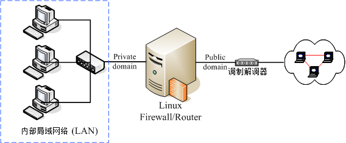

9.1 认识防火墙
网络安全除了随时注意相关软件的漏洞以及网络上的安全通报之外，你最好能够依据自己的环境来订定防火墙机制！ 这样对于你的网络环境，会比较有保障一点喔！那么什么是防火墙呢？其实防火墙就是透过订定一些有顺序的规则，并管制进入到我们网域内的主机 (或者可以说是网域) 数据封包的一种机制！更广义的来说，只要能够分析与过滤进出我们管理之网域的封包数据， 就可以称为防火墙。
防火墙又可以分为硬件防火墙与本机的软件防火墙。硬件防火墙是由厂商设计好的主机硬件， 这部硬件防火墙内的操作系统主要以提供封包数据的过滤机制为主，并将其他不必要的功能拿掉。因为单纯作为防火墙功能而已， 因此封包过滤的效率较佳。至于软件防火墙呢？那就是我们这个章节要来谈论的啊！ 软件防火墙本身就是在保护系统网络安全的一套软件(或称为机制)，例如 Netfilter 与 TCP Wrappers 都可以称为软件防火墙。
无论怎么分，反正防火墙就是用来保护我们网络安全的咚咚就对啦！我们这个章节主要在介绍 Linux 系统本身提供的软件防火墙的功能，那就是 Netfilter 。至于 TCP Wrappers 虽然在基础篇的第十八章认识系统服务里面谈过了，我们这里还会稍微简单的介绍啦！
9.1.1 开始之前来个提醒事项
由于本章主要的目的在介绍 Netfilter 这种封包过滤式的防火墙机制，因此网络基础里面的许多封包与讯框的概念要非常清楚， 包括网域的概念, IP 网域的撰写方式等，均需有一定的基础才行。请到第二章加强一下 MAC, IP, ICMP, TCP, UDP 等封包表头数据的认识，以及 Network/Netmask 的整体网域 (CIDR) 写法等。
另外，虽然 Netfilter 机制可以透过 iptables 指令的方式来进行规则的排序与修改，不过鸟哥建议你利用 shell script 来撰写属于你自己的防火墙机制比较好，因为对于规则的排序与汇整有比较好的观察性， 可以让你的防火墙规则比较清晰一点。所以在你开始了解底下的资料之前，希望你可以先阅读过相关的数据了：
- 已经认识 Shell 以及 Shell script；
- 已经阅读过第二章网络基础的内容；
- 已经阅读过第七章认识网络安全的内容；
- 已经阅读过第八章路由器的内容，了解重要的路由概念；
- 最好拥有两部主机以上的小型局域网络环境，以方便测试防火墙；
- 做为区域防火墙的 Linux 主机最好有两张实体网卡，可以进行多种测试，并架设 NAT 服务器；
9.1.2 为何需要防火墙
仔细分析第七章的图 7.1-1 可以发现， 封包进入本机时，会通过防火墙、服务器软件程序、SELinux与文件系统等。所以基本上，如果你的系统 (1)已经关闭不需要而且危险的服务； (2)已经将整个系统的所有软件都保持在最新的状态； (3)权限设定妥当且定时进行备份工作； (4)已经教育用户具有良好的网络、系统操作习惯。 那么你的系统实际上已经颇为安全了！要不要架设防火墙？那就见仁见智啰！
不过，毕竟网络世界是很复杂的，而 Linux 主机也不是一个简单的东西，说不定哪一天你在进行某个软件的测试时， 主机突然间就启动了一个网络服务，如果你没有管制该服务的使用范围，那么该服务就等于对所有 Internet 开放， 那就麻烦了！因为该服务可能可以允许任何人登入你的系统，那不是挺危险？
所以啰，防火墙能作什么呢？防火墙最大的功能就是帮助你『限制某些服务的存取来源』！ 举例来说： (1)你可以限制文件传输服务 (FTP) 只在子域内的主机才能够使用，而不对整个 Internet 开放； (2)你可以限制整部 Linux 主机仅可以接受客户端的 WWW 要求，其他的服务都关闭； (3)你还可以限制整部主机仅能主动对外联机。反过来说，若有客户端对我们主机发送主动联机的封包状态 (TCP 封包的 SYN flag) 就予以抵挡等等。这些就是最主要的防火墙功能了！
所以鸟哥认为，防火墙最重要的任务就是在规划出：
- 切割被信任(如子域)与不被信任(如 Internet)的网段；
- 划分出可提供 Internet 的服务与必须受保护的服务；
- 分析出可接受与不可接受的封包状态；
当然啦，咱们 Linux 的 iptables 防火墙软件还可以进行更细部深入的 NAT (Network Address Translation) 的设定，并进行更弹性的 IP 封包伪装功能，不过，对于单一主机的防火墙来说， 最简单的任务还是上面那三项就是了！所以，你需不需要防火墙呢？理论上，当然需要！ 而且你必须要知道『你的系统哪些数据与服务需要保护』，针对需要受保护的服务来设定防火墙的规则吧！ 底下我们先来谈一谈，那在 Linux 上头常见的防火墙类型有哪些？
9.1.3 Linux 系统上防火墙的主要类别
基本上，依据防火墙管理的范围，我们可以将防火墙区分为网域型与单一主机型的控管。在单一主机型的控管方面， 主要的防火墙有封包过滤型的 Netfilter 与依据服务软件程序作为分析的 TCP Wrappers 两种。若以区域型的防火墙而言， 由于此类防火墙都是当作路由器角色，因此防火墙类型主要则有封包过滤的 Netfilter 与利用代理服务器 (proxy server) 进行存取代理的方式了。
Netfilter (封包过滤机制)
所谓的封包过滤，亦即是分析进入主机的网络封包，将封包的表头数据捉出来进行分析，以决定该联机为放行或抵挡的机制。 由于这种方式可以直接分析封包表头数据，所以包括硬件地址(MAC), 软件地址 (IP), TCP, UDP, ICMP 等封包的信息都可以进行过滤分析的功能，因此用途非常的广泛。(其实主要分析的是 OSI 七层协议的 2, 3, 4 层啦)
在 Linux 上面我们使用核心内建的 Netfilter 这个机制，而 Netfilter 提供了 iptables 这个软件来作为防火墙封包过滤的指令。由于 Netfilter 是核心内建的功能，因此他的效率非常的高！ 非常适合于一般小型环境的设定呢！Netfilter 利用一些封包过滤的规则设定，来定义出什么资料可以接收， 什么数据需要剔除，以达到保护主机的目的喔！
TCP Wrappers (程序控管)
另一种抵挡封包进入的方法，为透过服务器程序的外挂 (tcpd) 来处置的！与封包过滤不同的是， 这种机制主要是分析谁对某程序进行存取，然后透过规则去分析该服务器程序谁能够联机、谁不能联机。 由于主要是透过分析服务器程序来控管，因此与启动的埠口无关，只与程序的名称有关。 举例来说，我们知道 FTP 可以启动在非正规的 port 21 进行监听，当你透过 Linux 内建的 TCP wrappers 限制 FTP 时， 那么你只要知道 FTP 的软件名称 (vsftpd) ，然后对他作限制，则不管 FTP 启动在哪个埠口，都会被该规则管理的。
Proxy (代理服务器)
其实代理服务器是一种网络服务，它可以『代理』用户的需求，而代为前往服务器取得相关的资料。就有点像底下这个图示吧：
 图 9.1-1、Proxy Server 的运作原理简介
图 9.1-1、Proxy Server 的运作原理简介
以上图为例，当 Client 端想要前往 Internet 取得 Google 的数据时，他取得数据的流程是这样的：
1. client 会向 proxy server 要求数据，请 proxy 帮忙处理；
2. proxy 可以分析使用者的 IP 来源是否合法？使用者想要去的 Google 服务器是否合法？ 如果这个 client 的要求都合法的话，那么 proxy 就会主动的帮忙 client 前往 Google 取得资料；
3. Google 所回传的数据是传给 proxy server 的喔，所以 Google 服务器上面看到的是 proxy server 的 IP 啰；
4. 最后 proxy 将 Google 回传的数据送给 client。
这样了解了吗？没错， client 并没有直接连上 Internet ，所以在实线部分(步骤 1, 4)只要 Proxy 与 Client 可以联机就可以了！此时 client 甚至不需要拥有 public IP 哩！而当有人想要攻击 client 端的主机时， 除非他能够攻破 Proxy server ，否则是无法与 client 联机的啦！
另外，一般 proxy 主机通常仅开放 port 80, 21, 20 等 WWW 与 FTP 的埠口而已，而且通常 Proxy 就架设在路由器上面，因此可以完整的掌控局域网络内的对外联机！让你的 LAN 变的更安全啊！ 由于一般小型网络环境很少会用到代理服务器，因此本书并没有谈到 proxy server 的设定，有兴趣的话可以参考一下[第十七章 squid](http://linux.vbird.org/linux_server/0420squid.php) ([注1](#ps1)) 这个软件的官网或 google 一下吧！
9.1.4 防火墙的一般网络布线示意
由前面的说明当中，你应该可以了解到一件事，那就是防火墙除了可以『保护防火墙机制本身所在的那部主机』之外，还可以『保护防火墙后面的主机』。也就是说，防火墙除了可以防备本机被入侵之外， 他还可以架设在路由器上面藉以控管进出本地端网域的网络封包。 这种规划对于内部私有网域的安全也有一定程度的保护作用呢！底下我们稍微谈一谈目前常见的防火墙与网络布线的配置吧：
单一网域，仅有一个路由器：
防火墙除了可以作为 Linux 本机的基本防护之外，他还可以架设在路由器上面以管控整个局域网络的封包进出。 因此，在这类的防火墙上头通常至少需要有两个接口，将可信任的内部与不可信任的 Internet 分开， 所以可以分别设定两块网络接口的防火墙规则啦！简单的环境如同下列图 9.1-2 所示。
在图 9.1-2 中，由于防火墙是设定在所有网络封包都会经过的路由器上头， 因此这个防火墙可以很轻易的就掌控到局域网络内的所有封包， 而且你只要管理这部防火墙主机，就可以很轻易的将来自 Internet 的不良网络封包抵挡掉吶。 只要管理一部主机就能够造福整的 LAN 里面的 PC，很划算的啦。
如果你想要将局域网络控管的更严格的话，那你甚至可以在这部 Linux 防火墙上面架设更严格的代理服务器， 让客户端仅能连上你所开放的 WWW 服务器而已，而且还可以透过代理服务器的登录文件分析功能， 明确的查出来那个使用者在某个时间点曾经连上哪些 WWW 服务器，你瞧瞧！厉害吧！ 如果在这个防火墙上面再加装类似 MRTG 的流量监控软件，还能针对整个网域的流量进行监测。这样配置的优点是：
- 因为内外网域已经分开，所以安全维护在内部可以开放的权限较大！
- 安全机制的设定可以针对 Linux 防火墙主机来维护即可！
- 对外只看的到 Linux 防火墙主机，所以对于内部可以达到有效的安全防护！
 图 9.1-2、单一网域，仅有一个路由器的环境示意图
内部网络包含安全性更高的子网，需内部防火墙切开子网：
一般来说，我们的防火墙对于 LAN 的防备都不会设定的很严格，因为是我们自己的 LAN 嘛！所以是信任网域之一啰！不过，最常听到的入侵方法也是使用这样的一个信任漏洞！ 因为你不能保证所有使用企业内部计算机的用户都是公司的员工，也无法保证你的员工不会『搞破坏！』 更多时候是由于某些外来访客利用移动式装置 (笔记本电脑) 连接到公司内部的无线网络来加以窃取企业内部的重要信息。
呵呵！所以，如果你有特别重要的部门需要更安全的保护网络环境，那么将 LAN 里面再加设一个防火墙，将安全等级分类，那么将会让你的重要数据获得更佳的保护喔！整个架构有点像下图所示。
 图 9.1-3、内部网络包含需要更安全的子网防火墙
图 9.1-3、内部网络包含需要更安全的子网防火墙在防火墙的后面架设网络服务器主机
还有一种更有趣的设定，那就是将提供网络服务的服务器放在防火墙后面，这有什么好处呢？ 如下图所示，Web, Mail 与 FTP 都是透过防火墙连到 Internet 上面去，所以， 底下这四部主机在 Internet 上面的 Public IP 都是一样的！(这个观念我们会在本章底下的 NAT 服务器的时候再次的强调)。 只是透过防火墙的封包分析后，将 WWW 的要求封包转送到 Web 主机，将 Mail 送给 Mail Server 去处理而已(透过 port 的不同来转递)。
好了，因为四部主机在 Internet 上面看到的 IP 都相同，但是事实上却是四部不同的主机， 而当有攻击者想要入侵你的 FTP 主机好了，他使用各种分析方法去进攻的主机，其实是『防火墙』那一部， 攻击者想要攻击你内部的主机，除非他能够成功的搞定你的防火墙，否则就很难入侵你的内部主机呢！
而且，由于主机放置在两部防火墙中间，内部网络如果发生状况时 (例如某些使用者不良操作导致中毒啊、 被社交工程攻陷导致内部主机被绑架啊等等的) ，是不会影响到网络服务器的正常运作的。 这种方式适用在比较大型的企业当中，因为对这些企业来说，网络主机能否提供正常稳定的服务是很重要的！
不过，这种架构下所进行的设定就得包含 port 的转递，而且要有很强的网络逻辑概念， 可以厘清封包双向沟通时的流动方式。对于新手来说，设定上有一定的难度， 鸟哥个人不太建议新手这么做，还是等以后有经验之后再来玩这种架构吧！
 图 9.1-4、架设在防火墙后端的网络服务器环境示意图
图 9.1-4、架设在防火墙后端的网络服务器环境示意图通常像上图的环境中，将网络服务器独立放置在两个防火墙中间的网络，我们称之为非军事区域 (DMZ)。 DMZ 的目的就如同前面提到的，重点在保护服务器本身，所以将 Internet 与 LAN 都隔离开来，如此一来不论是服务器本身，或者是 LAN 被攻陷时，另一个区块还是完好无缺的！
9.1.5 防火墙的使用限制
从前面的分析中，我们已经知道过封包滤式防火墙主要在分析 OSI 七层协议当中的 2, 3, 4 层，既然如此的话， Linux 的 Netfilter 机制到底可以做些什么事情呢？其实可以进行的分析工作主要有：
拒绝让 Internet 的封包进入主机的某些端口 这个应该不难了解吧！例如你的 port 21 这个 FTP 相关的埠口，若只想要开放给内部网络的话，那么当 Internet 来的封包想要进入你的 port 21 时，就可以将该数据封包丢掉！因为我们可以分析的到该封包表头的端口号码呀！
拒绝让某些来源 IP 的封包进入 例如你已经发现某个 IP 主要都是来自攻击行为的主机，那么只要来自该 IP 的资料封包，就将他丢弃！这样也可以达到基础的安全呦！
拒绝让带有某些特殊旗标 (flag) 的封包进入 最常拒绝的就是带有 SYN 的主动联机的旗标了！只要一经发现，嘿嘿！你就可以将该封包丢弃呀！
分析硬件地址 (MAC) 来决定联机与否 如果你的局域网络里面有比较捣蛋的但是又具有比较高强的网络功力的高手时，如果你使用 IP 来抵挡他使用网络的权限，而他却懂得反正换一个 IP 就好了，都在同一个网域内嘛！ 同样还是在搞破坏～怎么办？没关系，我们可以死锁他的网络卡硬件地址啊！因为 MAC 是焊在网络卡上面的，所以你只要分析到该使用者所使用的 MAC 之后，可以利用防火墙将该 MAC 锁住，呵呵！除非他能够一换再换他的网络卡来取得新的 MAC，否则换 IP 是没有用的啦！
虽然 Netfilter 防火墙已经可以做到这么多的事情，不过，还是有很多事情没有办法透过 Netfilter 来完成喔！ 什么？设定防火墙之后还不安全啊！那当然啦！谁说设定了防火墙之后你的系统就一定安全？ 防火墙虽然可以防止不受欢迎的封包进入我们的网络当中，不过，某些情况下，他并不能保证我们的网络一定就很安全。 举几个例子来谈一谈：
防火墙并不能很有效的抵挡病毒或木马程序 假设你已经开放了 WWW 的服务，那么你的 WWW 主机上面，防火墙一定得要将 WWW 服务的 port 开放给 Client 端登入才行吧！否则你的 WWW 主机设定了等于没有用对吧！也就是说，只要进入你的主机的封包是要求 WWW 数据的，就可以通过你的防火墙。那好了，『万一你的 WWW 服务器软件有漏洞，或者本身向你要求 WWW 服务的该封包就是病毒在侦测你的系统』时，你的防火墙可是一点办法也没有啊！ 因为本来设定的规则就是会让他通过啊。
防火墙对于来自内部 LAN 的攻击较无承受力 一般来说，我们对于 LAN 里面的主机都没有什么防火墙的设定，因为是我们自己的 LAN 啊，所以当然就设定为信任网域了！不过， LAN 里面总是可能有些网络小白啊，虽然他们不是故意要搞破坏， 但是他们就是不懂嘛！所以就乱用网络了。这个时候就很糟糕，因为防火墙对于内部的规则设定通常比较少， 所以就容易造成内部员工对于网络误用或滥用的情况。
所以啦，还是回到第七章的图 7.1-1 的说明去看看，分析一下该图示，你就会知道，在你的 Linux 主机实地上网之前，还是得先：
- 关闭几个不安全的服务；
- 升级几个可能有问题的套件；
- 架设好最起码的安全防护--防火墙--
其他相关的讯息还是请到第七章认识网络安全里面去看一看怎么增加自身的安全吧！